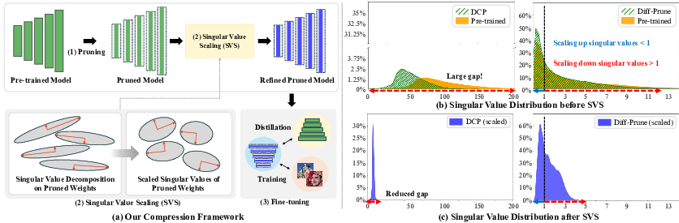

While pruning methods effectively maintain model performance without extra training costs, they often focus solely on preserving crucial connections, overlooking the impact of pruned weights on subsequent fine-tuning or distillation, leading to inefficiencies. Moreover, most compression techniques for generative models have been developed primarily for GANs, tailored to specific architectures like StyleGAN, and research into compressing Diffusion models has just begun. Even more, these methods are often applicable only to GANs or Diffusion models, highlighting the need for approaches that work across both model types.
In this paper, we introduce Singular Value Scaling (SVS), a versatile technique for refining pruned weights, applicable to both model types. Our analysis reveals that pruned weights often exhibit dominant singular vectors, hindering fine-tuning efficiency and leading to suboptimal performance compared to random initialization. Our method enhances weight initialization by minimizing the disparities between singular values of pruned weights, thereby improving the fine-tuning process. This approach not only guides the compressed model toward superior solutions but also significantly speeds up finetuning.
Extensive experiments on StyleGAN2, StyleGAN3 and DDPM demonstrate that SVS improves compression performance across model types without additional training costs. Over, in terms of FID scores, our method not only surpasses state-of-the-art by a large margin but also achieves comparable scores with only half training iterations.
(a) Dominant singular vectors in pruned weights. We analyze the learned prior of pruned weights inherited from the pre-trained model by employing Singular Value Decomposition (SVD). Each singular value represents the influence of its corresponding singular vector within the weight. The most notable observation is the large gap between the largest and smallest singular values of pruned weights (\(\sim\) \(\times\) 100). This implies that the forward and backward propagations of the weights are heavily influenced by these dominant singular vectors. This can potentially bias the compressed model towards these singular vectors during training, severely limiting diverse exploration in the weight space.
(b) Our framework. Based on our observation, we propose “Singular Value Scaling (SVS)”, to refine pruned weights to enhance fine-tuning efficiency. Our primary goal is to reduce the gap between the singular values of pruned weights. To achieve this, we simply scale the singular values using the “square root function”. By scaling the singular values of pruned weights in this manner, we can preserve the original bases while balancing their relative contributions. This balanced contribution helps the compressed model fully leverage the pre-trained model’s knowledge, facilitating a more effective path to the optimal solution. @misc{kim2024singularvaluescalingefficient,
title={Singular Value Scaling: Efficient Generative Model Compression via Pruned Weights Refinement},
author={Hyeonjin Kim and Jaejun Yoo},
year={2024},
eprint={2412.17387},
archivePrefix={arXiv},
primaryClass={cs.CV},
url={https://arxiv.org/abs/2412.17387},
}